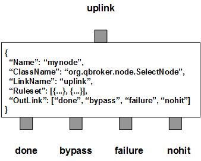

SelectNode parses the payload of JMS Messages and selects the portions of the content according to certain rules. For each selected chunk of the content, SelectNode creates a new TextMessage and stores the data into it. It also copies the properties of the original message into the new messages and passes them through the outlink of done. According to the rulesets, SelectNode filters the incoming messages into three outlinks: bypass for those original messages, nohit for those messages do not belong to any rulesets, failure for the messages failed at the selecting process.
SelectNode contains a number of predefined rulesets. These rulesets categorize messages into non-overlapping groups. Therefore, each ruleset defines a unique message group. The ruleset also defines the operations to select content from the messages and other parameters for the group. If a ruleset has the preferredOutLink defined, SelectNode will route the messages to its outlink without any actions. StringProperty determines what properties to be copied over from the original message to the new messages. If it is null, nothing will be copied over. If it is empty, all properties will be copied over. Otherwise, only those properties defined in StringProperty will be copied over. If StoreField is defined for a ruleset, it must be a full path to a local file. SelectNode will retrieve the content from the external file. This is good in case the size of content is too large for a message.
The default operation is to split the content via the given delimiters. The split items will be selected for the ruleset. Alternatively, if Pattern is defined in a ruleset, SelectNode will parse the content with the pattern. All the matched items will be selected for the ruleset. If XPathExpression is defined, SelectNode will use it to select DOM nodes from the XML document. The text representation of each selected DOM node will be stored to every outgoing message. If JSONPathExpression is defined, SelectNode will use it to select JSON objects from the JSON payload. Pattern, XPath and JSON path support selections with dynamic variables.
SelectNode also allows developers to plug-in their own select methods. In this case, the full ClassName of the selection implementation and its SelectorArguments must be well defined in the rulesets. The requirement on the plug-ins is minimum. The class must have a public method of select(String text) that takes a String as the only argument. The return object must be a list of String for selected items on success. Each of the element of the list will be stored to the outgoing message. In case of failure, null should be returned. It also must have a constructor taking a Map with a unique value for the key of Name, or a List, or just a String as the single argument for the configurations. SelectNode will invoke the method to get the list of the selected items from each incoming message.
If CountField is defined for a ruleset, the total count of selected items will be set to the specified field of the incoming messages. In case of the split operition with given delimiters, the total count will be set at the end of the operation. It means those new messages will not have this property set. For other cases, the total count will be set right after the items are selected. Therefore, the total count can be copied over to the newly created messages. The downstream can use this count to terminate the aggregate sessions or loops. In order to set the property at CountField, the incoming message must be writeable. In most of the cases, you can use the receivers to set a dummy property on all incoming messages since it will make them writeable.
If XAMode is defined in a rulset, it will overwrite the default value defined on the node level. If the XAMode of a ruleset is on, SelectNode will make sure all the outgoing messages are delivered before routing the original message to bypass. Otherwise, the orginal message will be routed to bypass right after those newly created messages dispatched. In this case, SelectNode will not wait on their delivery.
SelectNode always adds an extra ruleset for the nohit messages. This nohit ruleset is always the first ruleset with the id of 0.
You are free to choose any names for the four fixed outlinks. But SelectNode always assumes the first outlink for done, the second for bypass, the third for failure and the last for nohit. They all can share the same name, too. For the first outlink, if it is partitioned, you must define the same Partition explicitly on every selection ruleset.
The select operation is executed via the pre-defined rulesets. Therefore, the configuration of the rulesets is critical to the operations of SelectNode. Here are complete properties of rulesets for SelectNode.
| Property Name | Data Type | Requirement | Description | Examples |
|---|---|---|---|---|
| Name | alphanumeric with no spaces | mandatory | name of the ruleset | event |
| StoreField | string | optional | full name of the file with the payload to select | |
| CountField | string | optional | name of the field to store the count | |
| XAMode | number | optional | transaction mode | 1 (default: same as node) |
| SOTBytes | string | optional | hex string for start of transmition | |
| EOTBytes | string | optional | hex string for end of transmition | 0x0a |
| Offhead | integer | optional | number of chars to be trimed off at the start | 0 |
| Offtail | integer | optional | number of chars to be trimed off at the end | 1 |
| Pattern | string | optional | pattern to select items | [^;]+;? |
| XPathExpression | string | optional | xpath expression to select items | //book[author="Neal Stephenson"]/title/text() |
| CheckNameSpace | string of true or false | optional | flag to check name space for XML | (default: false) |
| JSONPath | string | optional | JSON path expression to select items | store.book |
| ClassName | alphanumeric with no spaces | optional | full classname of the plugin | |
| SelectorArgument | object | optional | configuration data for plugin | see example |
| PreferredOutLink | alphanumeric with no spaces | mandatory for bypass only | name of the preferred outlink | bypass |
| JMSPropertyGroup | list | optional | list of pattern groups on properties to select messages | see example |
| XJMSPropertyGroup | list | optional | list of pattern groups on properties to exclude messages | see example |
| PatternGroup | list | optional | list of pattern groups on body to select messages | see example |
| XPatternGroup | list | optional | list of pattern groups on body to exclude messages | see example |
| StringProperty | map | optional | for copying over the properties from the original messages | see example |
{
...
"Ruleset": [{
"Name": "bypass",
"PreferredOutLink": "BYPASS",
"JMSPropertyGroup": [{
"JMSType": "^score$"
}]
}],
...
}
where it routes the messages to the outlink of BYPASS.
Here is an example of the ruleset for the default selection via delimeter. If StoreField is defined, the content of the file specified by StoreField will be parsed for selection.
{
...
"Ruleset": [{
"Name": "disk_io",
"JMSPropertyGroup": [{
"type": "disk_io"
}],
"EOTBytes": "0x0a",
"Offtail": "1",
"XAMode": "1",
"TextMode": "1",
"DisplayMask": "0",
"StringProperty": {
},
"CountField": "Count"
}],
...
}
where EOTBytes specifies the newline as the delimiter. Offtail of 1 trim the
newline off the line. The empty StringProperty tells the node to copy over all
properties of the original messages. CountField is set to Count that will
store the count of split lines. The downstream node will terminate the session
once it sees the message with this property.
Here is an example to select items via Pattern.
{
...
"Ruleset": [{
"Name": "email",
"JMSPropertyGroup": [{
"JMSType": "^email$"
}],
"Pattern": "[^;]+;?"
}],
...
}
where the rule tries to select all email addresses separated by semi-colon.
Here is an example to select items via XPath.
{
...
"Ruleset": [{
"Name": "xpath",
"JMSPropertyGroup": [{
"JMSType": "^xml$"
}],
"XPathExpression": "//Monitor/text()"
}],
...
}
where the rule tries to select all items of Monitors defined in Agent.xml.
Here is an example of SelectNode:
{
"Name": "node_select",
"ClassName": "org.qbroker.node.SelectNode",
"Description": "select items from text",
"Operation": "select",
"LinkName": "items",
"Capacity": "32",
"DisplayMask": "4102",
"Debug": "1",
"Ruleset": [{
"Name": "local",
"JMSPropertyGroup": [{
"service": "."
}],
"XJMSPropertyGroup": [{
"operation": "^upload$"
}],
"Partition": "0,24",
"StringProperty": {
},
"EOTBytes": "0x0a",
"Offtail": "1",
"XAMode": "1",
"TextMode": "1",
"DisplayMask": "1"
}],
"OutLink": [{
"Name": "selected",
"Capacity": "32",
"Partition": "0,24"
},{
"Name": "done",
"Capacity": "48",
"Partition": "32,8"
},{
"Name": "failure",
"Capacity": "48",
"Partition": "24,4"
},{
"Name": "nohit",
"Capacity": "32",
"Partition": "24,4"
}]
}